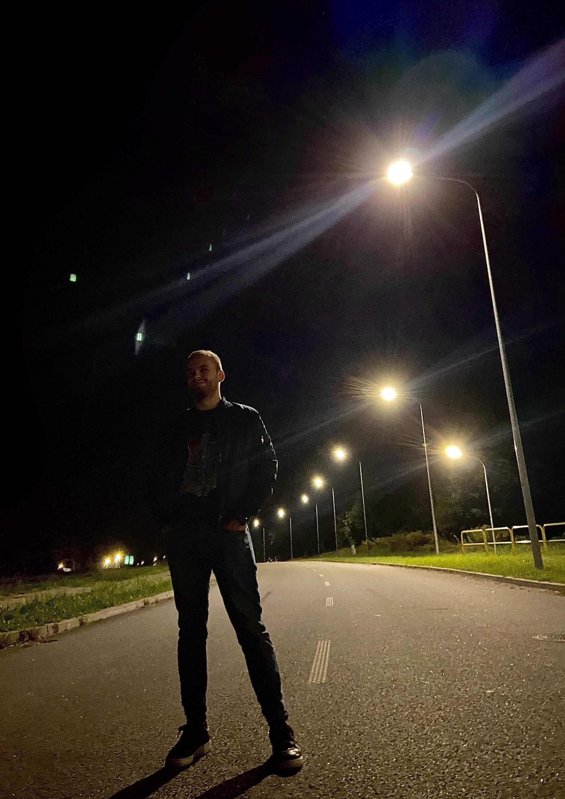
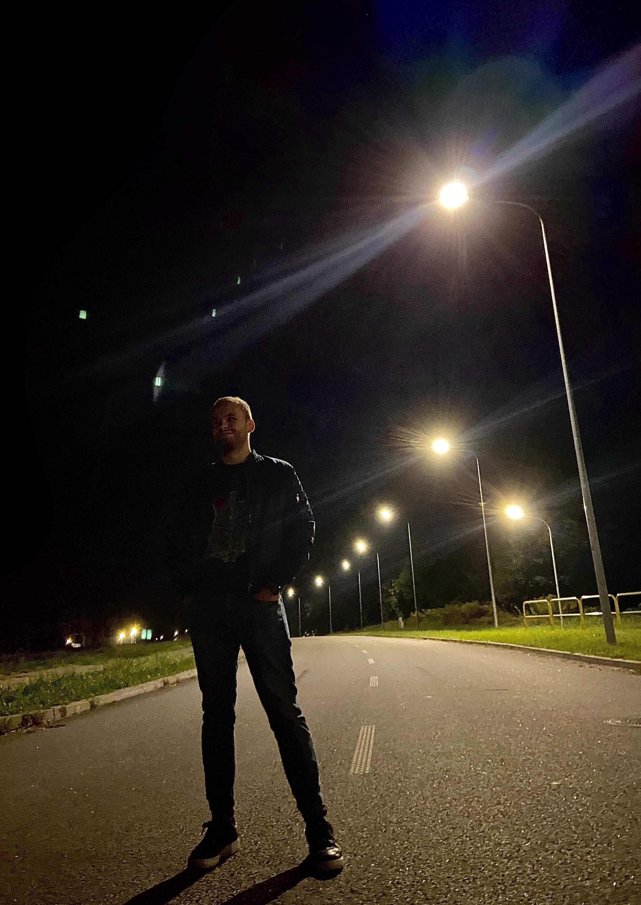

Rajza jest muzyczną podróżą przez rozterki, myśli i marzenia młodego muzyka. Eryk jest miłośnikiem muzyki lat 80., elektronicznych brzmień, progresywnego rocka oraz melodyjnego disco-popu, a Rajza jest niezwykłą wędrówką łączącą te gatunki. Podczas niej, każdy znajdzie utwór przez który będzie chciał zostać na dłużej.
 Choć sam określa się jako gitarzysta, skomponował całą muzykę i zagrał na każdym instrumencie na płycie. Nie zabrakło tu nowoczesnych brzmień syntezatorów, głębokich basów, jak również soczystych gitarowych solówek.
Choć sam określa się jako gitarzysta, skomponował całą muzykę i zagrał na każdym instrumencie na płycie. Nie zabrakło tu nowoczesnych brzmień syntezatorów, głębokich basów, jak również soczystych gitarowych solówek.
 Równie ważną materią były dla niego teksty, które napisał wraz z reżyserem jego wszystkich teledysków - Mikołajem Rajkowskim. Ich współpraca pozwoliła na stworzenie audio-wizualnego dzieła, które z pewnością pokochają słuchacze.
Rajza już trwa…
Choć sam określa się jako gitarzysta, skomponował całą muzykę i zagrał na każdym instrumencie na płycie. Nie zabrakło tu nowoczesnych brzmień syntezatorów, głębokich basów, jak również soczystych gitarowych solówek.  Równie ważną materią były dla niego teksty, które napisał wraz z reżyserem jego wszystkich teledysków - Mikołajem Rajkowskim. Ich współpraca pozwoliła na stworzenie audio-wizualnego dzieła, które z pewnością pokochają słuchacze.
Rajza już trwa…